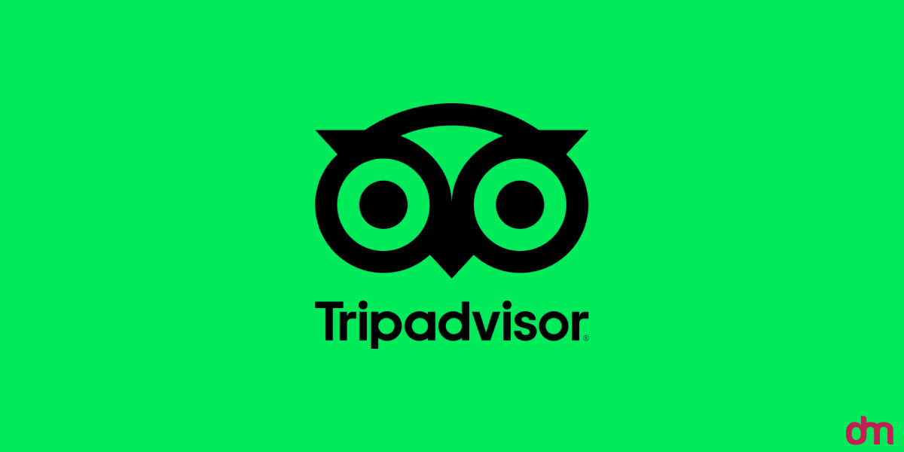

Le2e = Lcapture + Lqueue + Ltransform + Lpublish
Budget each stage separately; a fast Spark job cannot rescue a stalled capture or publish step.

From raw signals to answers teams can trust.
I’m Firman Insan Muhammad. You can call me VIM. This is a fireside walk through the data platform I built at Lifepal, the decisions behind it, and a separate, testable operator reference implementation.
The production outcomes are from my Lifepal work. The Go/Iceberg code below is an independently testable Nexus portfolio implementation.

A governed lakehouse built for speed and trust.
Streaming and batch sources, shared quality rules, curated models, and a clearer route to trusted decisions.
Lifepal platform experience · presented to Tripadvisor
Inside the system
Nexus joins streaming and batch work around a governed layer. The operator example below explores a stricter control-plane contract for that idea.
PostgreSQL change events, APIs and partner files.
Kafka · Debezium · AWSReusable ingestion, quality gates, freshness and ownership.
Python · checks · SLAsCurated Bronze, Silver and Gold models with agreed metrics.
Spark · dbt · SQLAnalytics, CRM, data science and governed agent tools.
BI · MCP · RAGThe streaming and scheduled paths meet in one governed lakehouse.
Databricks · Spark · SQL
This maps the Lifepal platform work described in my CV. The separate Go/Iceberg operator is explored in the code section.
Operating principle: If a pipeline cannot explain what it last published, how fresh it is, and who owns the failure, it is not finished.
The numbers behind the design
Open a topic to see how I would measure the platform, diagnose a failure, and make a trade-off explicit. These are engineering definitions, not claimed Tripadvisor production metrics.
The reporting delay changed from 24 hours to under five minutes, as stated in my CV. The ratio expresses how much smaller the delay became.
Le2e = Lcapture + Lqueue + Ltransform + Lpublish
Budget each stage separately; a fast Spark job cannot rescue a stalled capture or publish step.
F = tnow − max(tevent, visible)
Measure freshness from the newest source event a consumer can actually query. Source clocks must be trustworthy.
Bt+1 = max(0, Bt + λt − μt)
Arrivals λ and processing μ use the same time interval. If μ stays below λ during a travel-event spike, Kafka lag grows.
C = Nloaded eligible / Nsource eligible
Compare the same filtered population at source and target; define eligibility before calling a load complete.
D = (Nrows − Ndistinct event IDs) / Nrows
Catch replay or join amplification before a duplicate reaches a certified model.
G = ∧i ∈ critical checks passi
A release needs every critical check to pass. An average score must not hide a broken business rule.
r = hash(uid ∥ generation ∥ trigger)
A restarted controller derives the same logical run ID rather than inventing a second publication attempt.
apply(apply(S, r), r) = apply(S, r)
Applying the same run twice should leave the published state S exactly where one application leaves it.
published(r) ⇔ ∃s ∈ ancestry(main): run_id(s) = r
Inspect main’s snapshot history for the run ID before deciding whether an ambiguous commit took effect.
A = Non-time / Neligible runs
Count runs that delivered usable data by the agreed deadline, not jobs that merely ended successfully.
E = (1 − SLO) × Neligible runs
An illustrative SLO turns a reliability target into a finite number of late runs that incident reviews can track.
Cunit = (Ccompute + Cstorage + Ctransfer) / Ntrusted
Compare like-for-like workloads while tuning Spark jobs or warehouse models; include only records that clear quality gates.
The formulas are design and monitoring tools. Only the 24 h to under 5 min result above is a reported Lifepal outcome; the other symbols do not imply measured Tripadvisor or Lifepal SLO values.
The conversation
Four questions I would expect from a data platform team. Each answer points to a design choice, an outcome, or code you can inspect.
What would you change first in a fragmented data estate?
I would make the path from source to trusted model explicit. At Lifepal, I led a move from scattered batch jobs toward one governed lakehouse. Kafka and Debezium carried change events; APIs and partner files took the batch path. Both landed behind common quality and ownership rules.
Reporting delay went from 24 hours to under five minutes. The point was not speed alone: teams could find the same certified definitions when they came to the data later.
What happens when the publish call times out?
A timeout is an unknown outcome, not proof of failure. In the Nexus operator reference implementation, a run writes to an isolated Iceberg branch, audits it, then tries to fast-forward main. If the commit response is ambiguous, the controller re-observes the catalog and checks the run ID in snapshot history before it decides what happened.
That is a small code path with a big operational consequence: no blind second publish during a network partition.
How do you make quality the default for other engineers?
Put repeatable decisions in the platform. I built a config-driven ingestion framework, curated models for Finance, Marketing, CRM and Product, and checks that hold anomalous loads before consumers see them. The team had SLAs, freshness and volume alerts, runbooks, and incident reviews.
That work included more than 500 data-quality checks and cut data-trust escalations by 60%, as reported in my CV.
How does the platform help teams use data without losing control?
I prefer certified models, clear lineage, and read-only agent access over a new ungoverned route to the warehouse. My work has included an MCP server for governed natural-language queries, a RAG copilot, and Spark and SQL tuning that reduced a nightly batch from six hours to 90 minutes.
For Tripadvisor, I would bring those engineering patterns to a larger estate, measure their behavior there, and be candid about where I need to learn its Java services and specific warehouse choices.
Career outcomes in this section come from my attached CV and cover letter. The Go operator below is a separate portfolio reference implementation; its tests do not measure Lifepal production outcomes.
An interactive walkthrough
Choose a situation to see how the Nexus write–audit–publish design handles it. This browser model explains the decision path; the Go code and tests appear next.
The final path changes; the data contract does not.
The code, not just the story
Real excerpts from the Nexus operator reference implementation. Its Go test suite passed locally on 3 October 2026.
Loading source excerpt…Continue the conversation
We can talk through a data model, an ambiguous commit, an incident, or the trade-offs behind this platform.